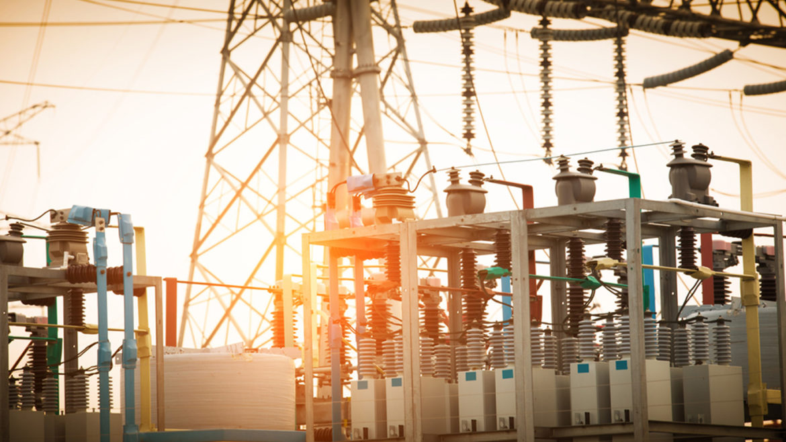

Villamos védelmek és autómatikák
Ez az oldal a Villamos védelmek ás autómatikák című tantárgy tematikáját tartalmazza.
Feladata és célja:
Megismerni a villamos energia rendszerben alkalmazott zárlat- és földzárlatvédelmi rendszert, az
alkalmazott védelmeket, valamint az üzemzavari és üzemviteli automatikákat. Megismerni a védelem
beállítási számításokat és alkalmazni a korábban megismert zárlatszámítási módszereket. Cél az
áramszolgáltatói és ipari gyakorlatban használható, alapvető ismeretek átadása.
Tematika
- A magyar villamos energia rendszer felépítése, védelmi stratégiák a feszültségszinttől és a hálózat
topológiájától függően.
- Védelmek, automatikák feladata, követelmények. Kapcsolat a
környezettel, a technológiával.
- Az alkalmazott zárlatszámítási módszerek áttekintése. Hálózati hibák
érzékelésének lehetőségei.
- A védelmek szelektív beállításának elve, feltételei. Túláramvédelmek
alkalmazása és korlátai, beállításuk számítása különböző hálózatképek, berendezések esetén. Impedancia
relék működési elve
- Érzékelési egyenletek és zárlatfajták kapcsolata. Szelektív beállítás feltételei,
karakterisztikák. Távolsági védelem fő részei.
- Érzékelési egyenletek, szelektív beállítás feltételei,
karakterisztikák. Érzékelést torzító hatások.
- Kölönbözeti védelmek működési elve. Transzformátor
differenciálvédelmek, kiegyenlítés számítása. Szakasz-védelmek.
- Gyűjtősín diszpozíciók, gyűjtősín
differenciál-védelmek. Digitális (numerikus) védelmek.
- Érzékelési egyenletek, algoritmusok. Zavaró jelek
és azok kiszűrésének lehetőségei.
- Üzemzavari-, és üzemviteli automatikák feladata, működési feltételeik.
Védelem-automatika üzemmódok koordinálása.
- Alkalmazott zárlat-, és földzárlatvédelmi rendszerek.
Komplex védelmek.
- Az alállomási irányítási rendszer és a védelmi rendszer együttműködése. Mérőváltók
jellemzői, kapcsolásai, speciális mérési módszerek, ellenőrző mérések.